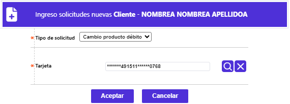
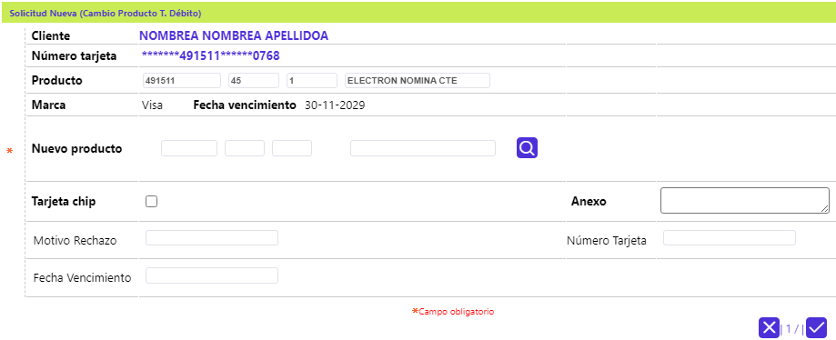

Cambio producto débito
A partir de los pasos previos descritos en la opción Ingreso otras solicitudes , se registra la solicitud de Cambio producto débito por otro producto débito existente dentro de los parametrizados en la opción Definición productos (Wilson favor vincular mediante enlace http://190.0.0.45:8081/desarrollo/templates/MEH_002B.html), para lo cual se selecciona el número de la tarjeta débito a renovar, y luego se activa el botón Aceptar:

el sistema despliega el siguiente formulario:

Descripción de Campos
|
Clientes |
Campo no modificable muestra el nombre del cliente titular de la tarjeta débito, haciendo clic sobre el mismo, se accede a los datos de dicho cliente si se requiere. |
|
Número de tarjeta |
Campo no modificable que ilustra el número de la tarjeta débito (enmascarado - si aplica) desde el cual, haciendo clic sobre el mismo permite conocer los datos de la misma. |
|
Producto |
Campos de salida desplegados por el sistema una vez ingresado el número de tarjeta asociado a la solicitud, permitiendo conocer el Bin, Segmento, Grupo de afinidad y Descripción, que conforman el producto del plástico actual. |
|
Marca |
Campo de salida que ilustra la franquicia asociada al producto, previa vinculación con el Bin a través del formulario Definición de bines. |
|
Fecha vencimiento |
Campo de salida que en formato DD-MM-YYYY muestra la fecha en que expira el plástico actual de la tarjeta. |
|
Emite plástico |
Campo que posee lista de valores adjunta de la que debe seleccionarse entre Si se emite plástico o No.Elpoder interactuar con este campo depende del valor que tenga el campo Posee plástico. |
|
Posee plástico |
Campo que ilustra lo parametrizado a nivel de Definición productos asociado a la tarjeta por medio de la que se realiza la solicitud. Si el campo aparece como activo o señalado permite interactuar con el siguiente campo Emite plástico. |
|
Motivo reposición |
Campo que posee lista de valores adjunta de la que debe seleccionarse entre Deterioro, Banda (magnética) o Nombre y de esa manera establecer la razón de ser de la solicitud. |
|
Tarjeta chip |
Campo tipo chekbox, permite marcar si la nueva tarjeta a emitir debe contener ese dispositivo o tecnología. |
|
Primer nombre/Segundo nombre |
Campos de salida que contienen los datos de primer y segundo nombres registrados para la tarjeta. |
|
Primer apellido Segundo apellido |
Campos de salida que contienen los datos de primer y segundo apellidos registrados para la tarjeta. |
|
Realce actual |
Campo de salida que ilustra el nombre del cliente tal y como aparece en el plástico actual a reponer. |
|
Realce nuevo |
Campo que se activa si la opción señalada en el campo Motivo reposición corresponde a Nombre, y permite registrar el nombre del cliente como éste desee que aparezca en el nuevo plástico a emitir, teniendo en cuenta la longitud máxima del mismo. |
|
Anexos |
Campo que permite ingresar información relacionada con la solicitud, referente a documentos suministrados por el cliente u otros datos. |
|
Motivo rechazo |
Campo de salida que contiene datos, solamente, cuando la solicitud es negada, ypermite conocer la razón correspondiente. |
|
Número tarjeta |
Campo de salida que despliega el nuevo número de tarjeta asignado por el sistema, para cuando se emite plástico. |
|
Fecha vencimiento |
Campo de salida que ilustra la fecha en que expira el nuevo plástico generado por el sistema, si el tipo de solicitud lo requiere. |